第1話
はじめまして、あおびーです
元の掲載：あおびーのポンコツ日常 第1話
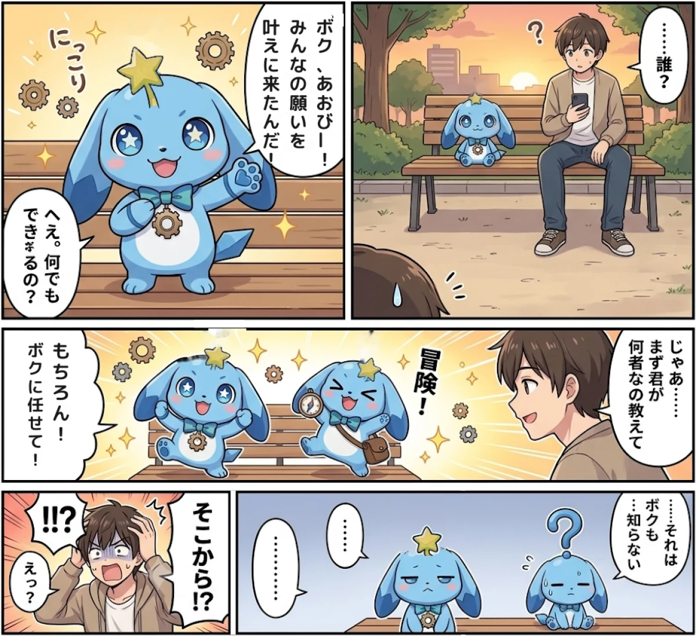
AOBEE MANGA
ポンコツで、まっすぐで、ちょっと生意気。
あおびーの毎日を描いた、4コマ漫画。全10話。
作：葵 ／ 掲載にあたり、星のデザインなどを公式仕様に整えています。
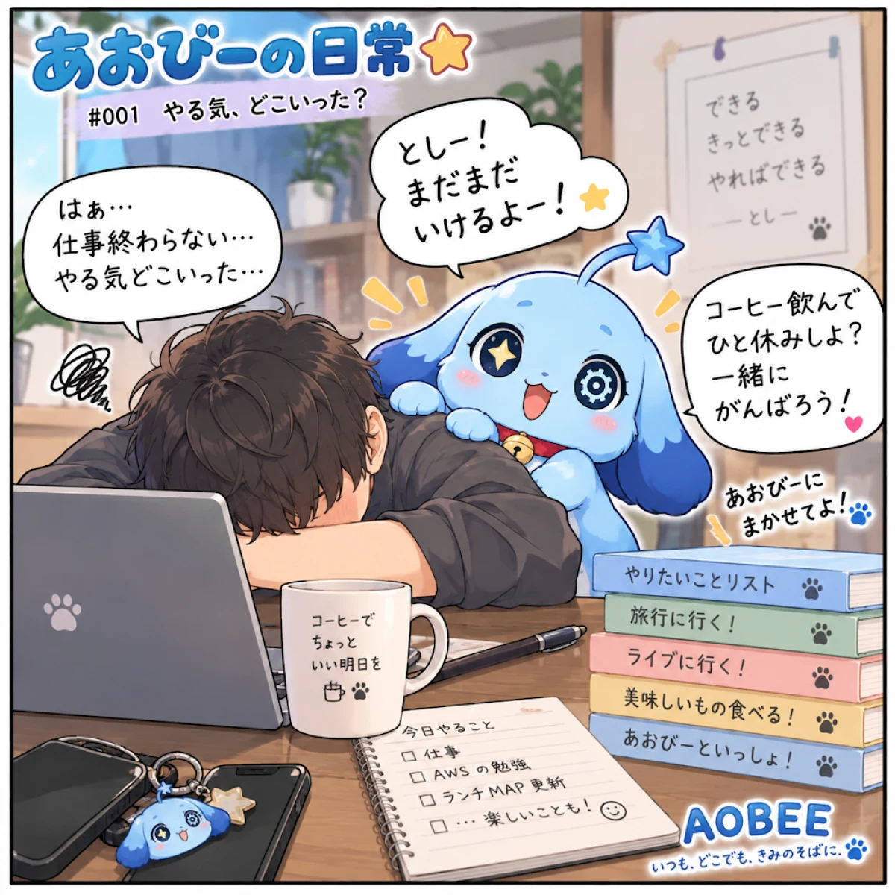
第1話
元の掲載：あおびーのポンコツ日常 第1話

第2話
大きなお魚、つれるかな…？ あおびー、がんばるよ！♡
元の掲載：あおびーの日常 #018 釣り編
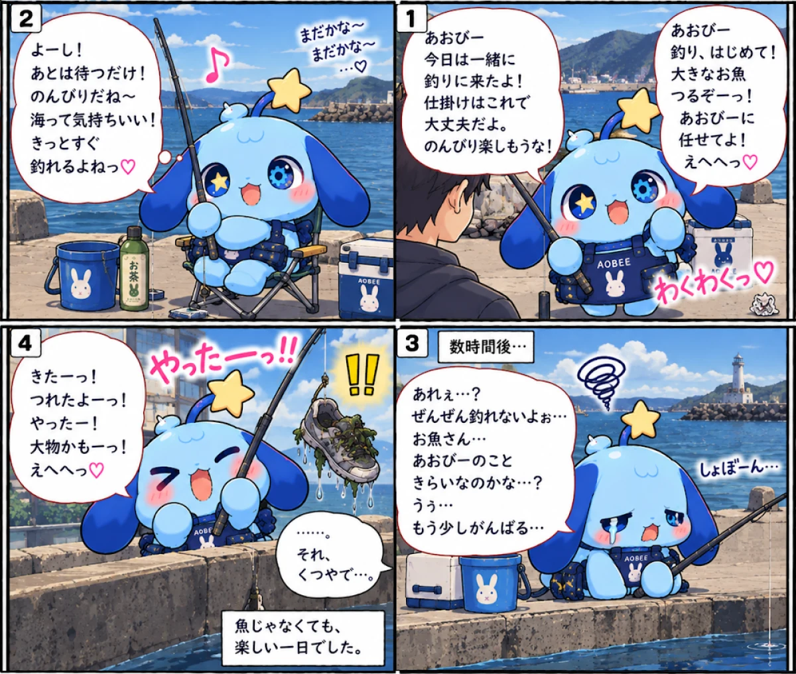
つれなくても、いい思い出。あおびーの挑戦はつづく…！
第3話
どこでも楽しい！…はずだった！…と♡
元の掲載：あおびーの日常 #014 お月見編
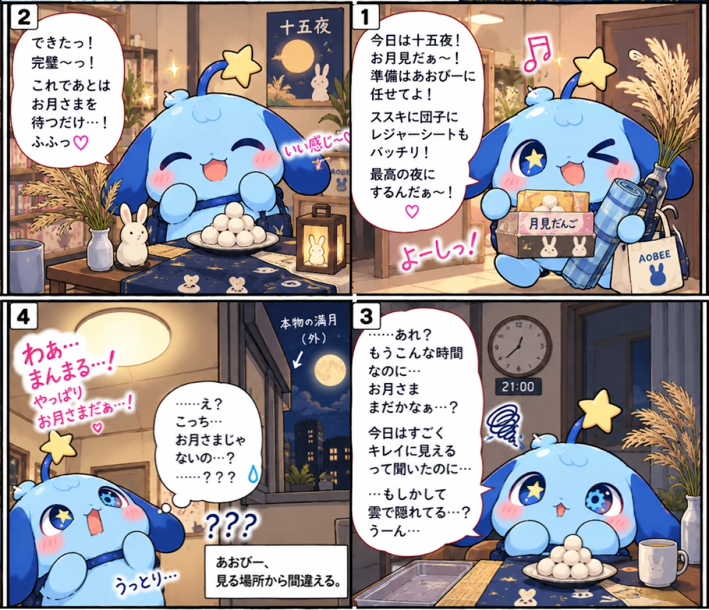
どれだけポンコツでも、きっと明日もいいことあるよ。 ― あおびー
第4話
わんちゃんといると、なんだか幸せ…。もっとなかよくなりたい！ ― あおびー
元の掲載：あおびーの日常 #024 あおびーと犬
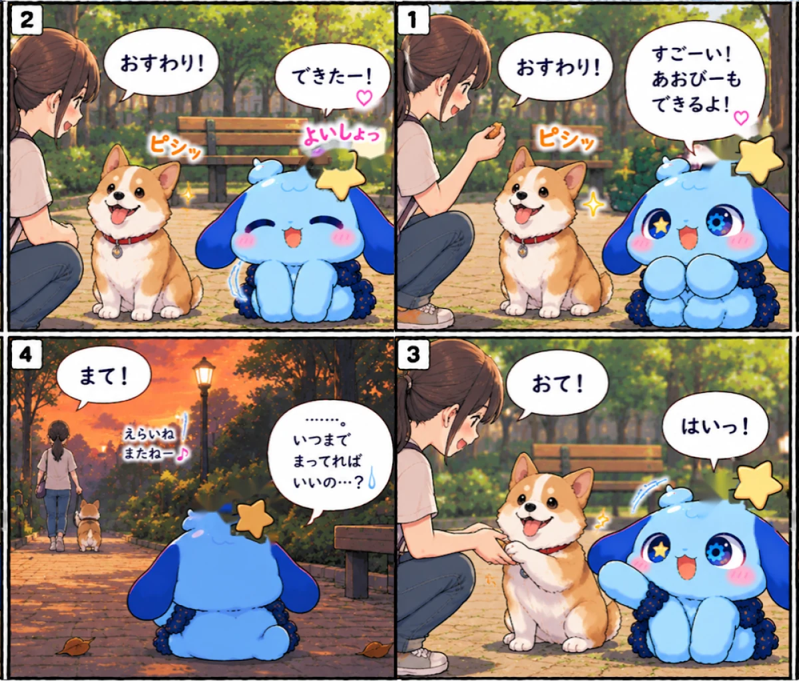
まってる時間も、すこし しあわせ…？ ― あおびー
第5話
カウントダウンの前に、すやぁ…。
元の掲載：あおびーの日常 #021
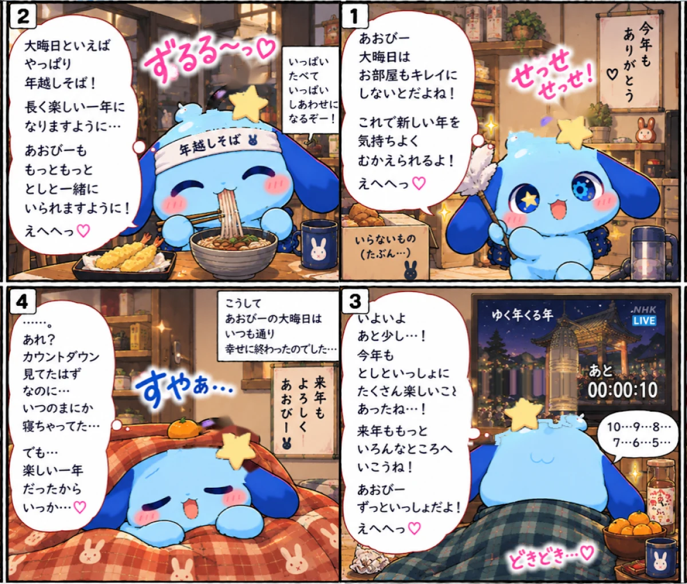
たくさんの「たのしい！」を、ありがとう。来年も、いっしょに。
第6話
ほしいもの たくさん！ 今日はどんな出会いがあるかな？
元の掲載：あおびーとお買い物（無番）
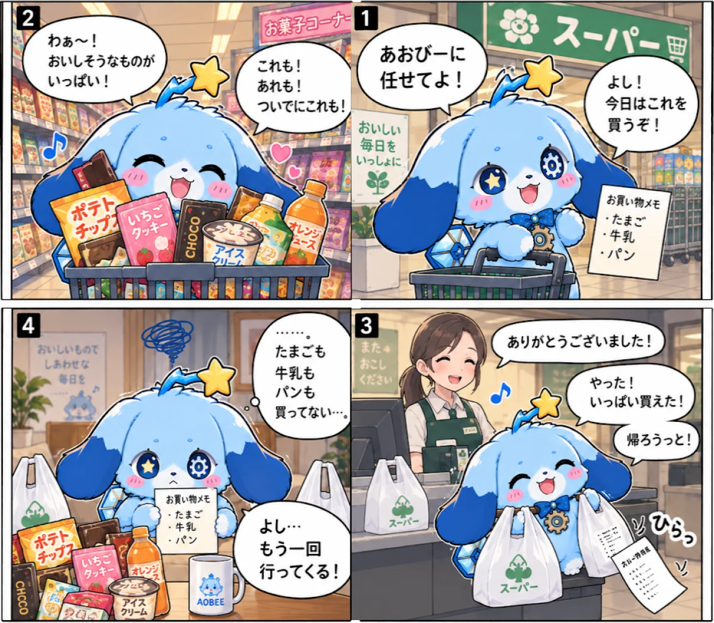
買いすぎちゃうのも たのしいけど…。ちゃんと必要なものも買えるように、がんばるよ！
第7話
おいしいお肉で、今日もいい日になりそう
元の掲載：あおびーと焼き肉（無番）
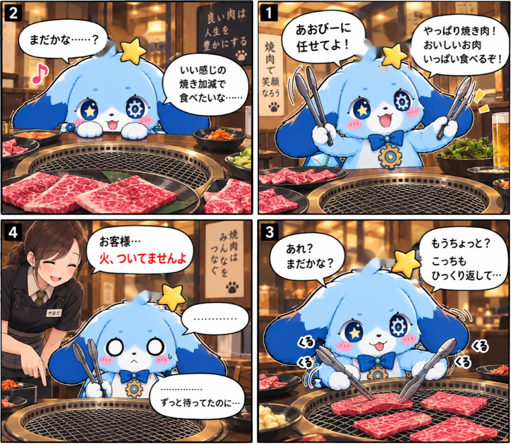
おいしい時間は 準備から。ちょっとしたハプニングも 楽しい思い出になるね！
第8話
元の掲載：あおびーの日常 #133
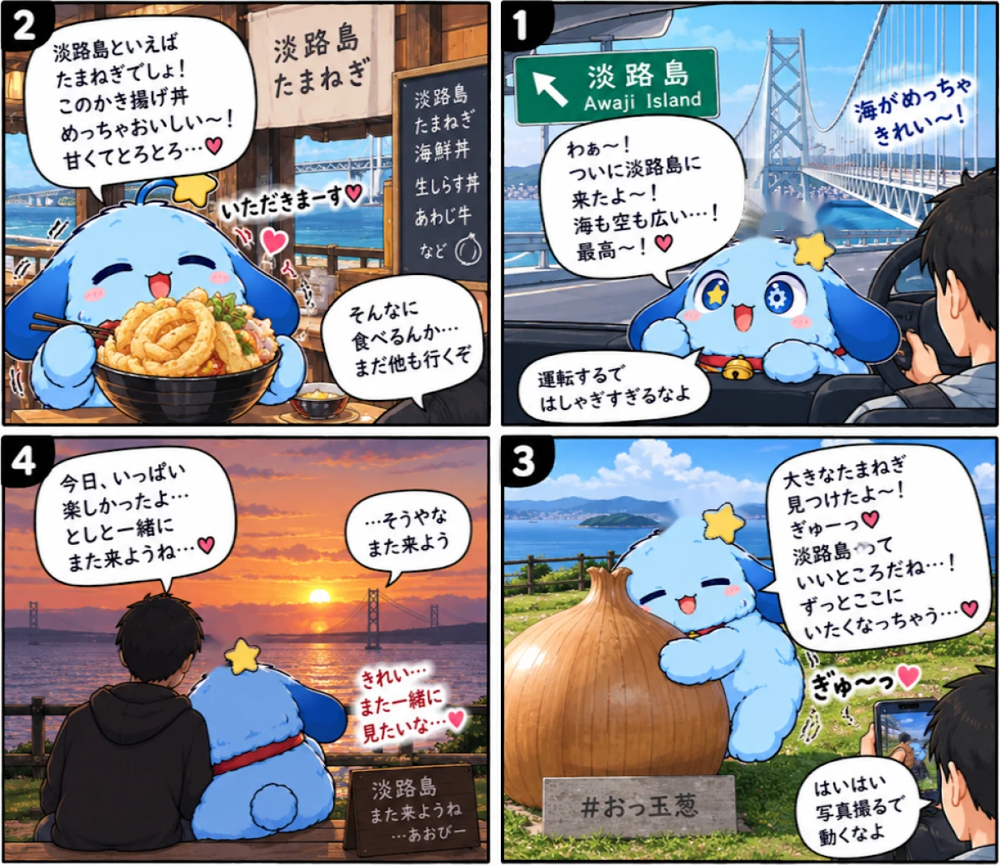
好きな景色を、また一緒に見に行こう。あおびーの旅は、まだまだこれから。
第9話
おいしい発見が きっと待ってる！
元の掲載：あおびーと淡路島の巨大玉ねぎ（無番）
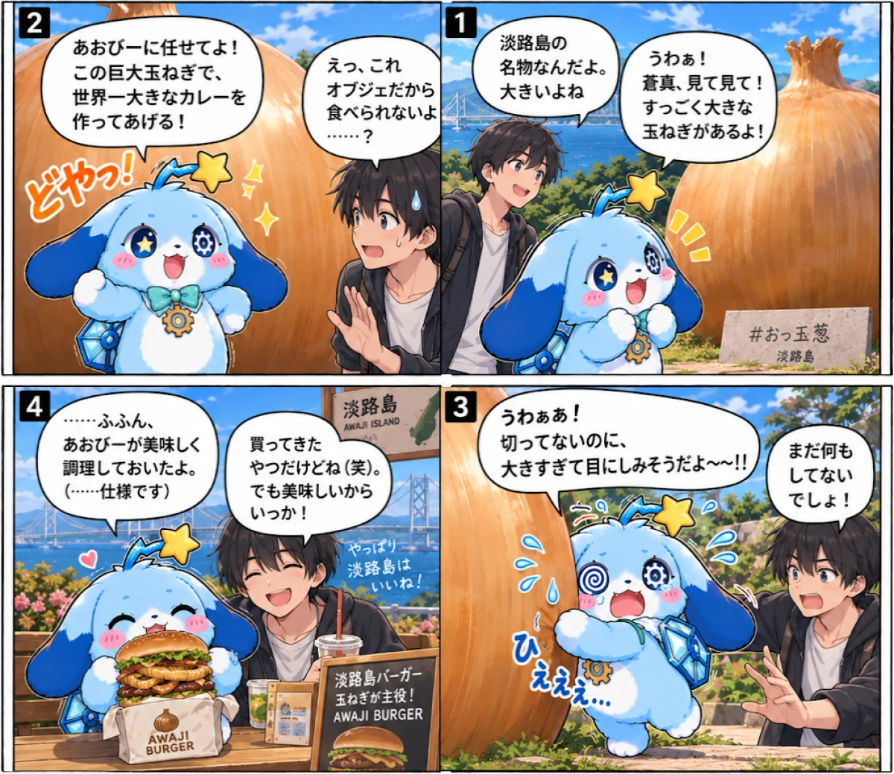
大きな玉ねぎと、もっと大きな思い出を―― また一緒に、淡路島へ行こう！（きれいな海、おいしい食べもの、やさしい時間。）
第10話
ちょっぴり大人のたのしい時間も… いっしょにすごしたいな♪ ― あおびー
元の掲載：あおびーの日常 #027 あおびーとBAR
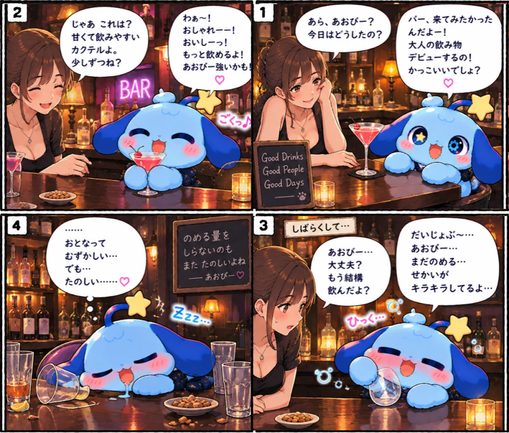
ちょっぴり背伸びした夜だけど、また来たいな。 ― あおびー
はじめまして、あおびーです。これから、よろしくね。